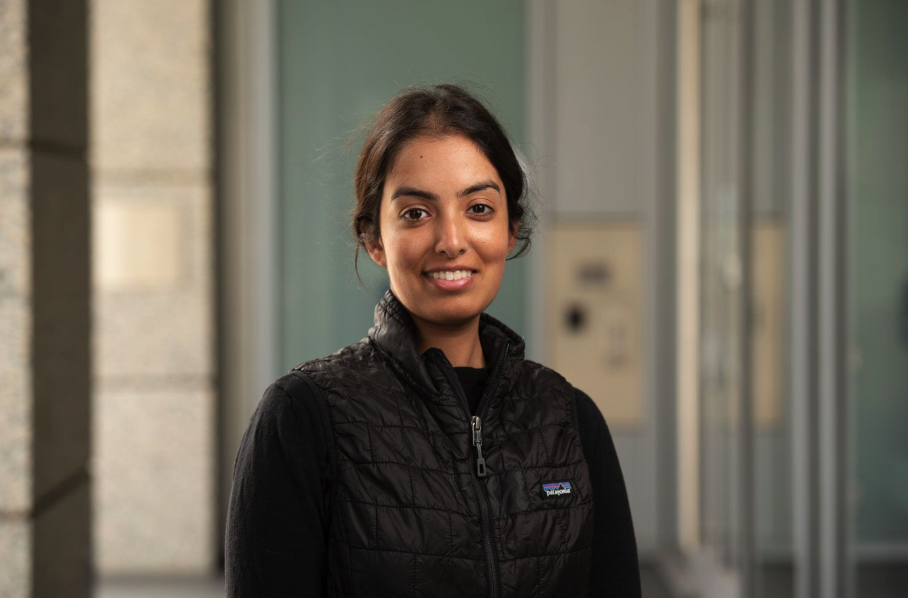

|
Aishwarya Mandyam
I am a PhD student at Stanford University working with Barbara Engelhardt and Emma Brunskill. I'm interested in building statistical/ML tools to improve clinical decision-making. Outside of research, I enjoy distance running, dogspotting, and eating black forest cake.
Email /
CV /
LinkedIn /
Blog
|

|
Kernel Density Bayesian Inverse Reinforcement Learning
Aishwarya Mandyam,
Didong Li,
Diana Cai,
Andrew Jones,
Barbara Engelhardt
Arxiv
Poster @ WiML workshop, Neurips 2022
Poster @ 4th Symposium on Advances in Approximate Bayesian Inference
A Bayesian inverse reinforcement learning method that uses conditional kernel density estimation to make computational gains on existing approaches.
|
Guiding Efficient, Effective, and Patient-Oriented Electrolyte Replacement in Critical Care: An Artificial Intelligence Reinforcement Learning Approach
Niranjani Prasad*,
Aishwarya Mandyam*,
Corey Chivers,
Michael Draugelis,
C. William Hanson,
Barbara Engelhardt,
Krzysztof Laudanski
Journal of Personalized Medicine
A reinforcement learning guided approach to electrolyte repletion, applied on a cohort from the University of Pennsylvania Medical Center.
|
Nested Policy Reinforcement Learning
Aishwarya Mandyam,
Andrew Jones,
Krzysztof Laudanski,
Barbara Engelhardt
Pre-print.
An RL framework that finds optimal policies in environments with known group structure.
|
COP-E-CAT: cleaning and organization pipeline for EHR computational and analytic tasks
Aishwarya Mandyam,
Elizabeth C. Yoo,
Jeff Soules,
Krzysztof Laudanski,
Barbara Engelhardt
BCB '21: Proceedings of the 12th ACM Conference on Bioinformatics, Computational Biology, and Health Informatics
An open-source pre-processing and analysis software for MIMIC-IV, a ubiquitous benchmark EHR dataset.
|
Estimating Influential Samples in the Fragile Families Challenge
Aishwarya Mandyam,
Siena Dumas Ang,
Barbara Engelhardt
Poster @ WiML Workshop at NeurIPS 2020
Using influence functions to identify individuals that disproportionately affect the generalization error of the prediction methods used in the Fragile Families Challenge.
|
Molecular Matchmaker: selecting peptide-aptamer binding pairs using machine learning
Aishwarya Mandyam,
Yuhao Wan,
Luis Ceze,
Jeff Nivala,
Kevin Jamieson,
Oral Presentation @ Machine Learning for Computational Biology (MLCB) 2020
Using machine learning to characterize the relationship between binding aptamers and peptides.
|
Porcupine: Rapid and robust tagging of physical objects using nanopore-orthogonal DNA strands
Katie Doroschak,
Karen Zhang,
Melissa Queen,
Aishwarya Mandyam,
Karin Strauss,
Luis Ceze,
Jeff Nivala,
Nature Communications, 2019
A robust, low density concept for DNA barcoding and storage.
|
Reducing Identification Time in a Molecular Tagging System
Aishwarya Mandyam,
Katie Doroschak,
Karen Zhang, Melissa Queen,
Karin Strauss,
Luis Ceze,
Jeff Nivala,
Poster and Oral Presentation @ Grace Hopper Conference 2019 (2nd place ACM Student Research Award @ GHC)
Evaluating the results of nanopore sequencing on custom DNA barcodes, and designing new DNA barcodes based on the error analysis results.
|
American Statistical Association, Colorado-Wyoming Chapter
April 2021
|
Machine Learning for Computational Biology (MLCB)
October 2021
|
Allen Institute for Artificial Intelligence
March 2019- September 2019
|
Sage Bionetworks
September 2018- March 2019
|
Microsoft
June 2018-September 2018
|
Microsoft
June 2017-September 2017
|
Microsoft
June 2016-September 2016
|
Expedia
June 2015- August 2015
|
|
{kind=link}